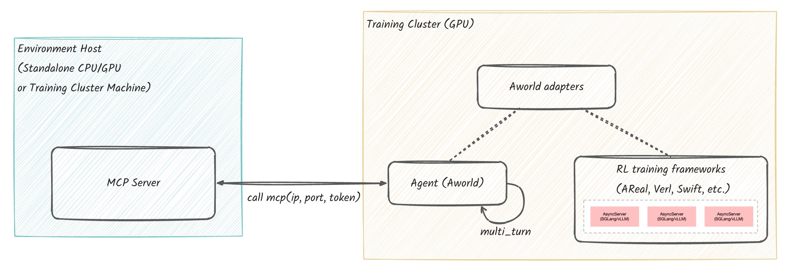
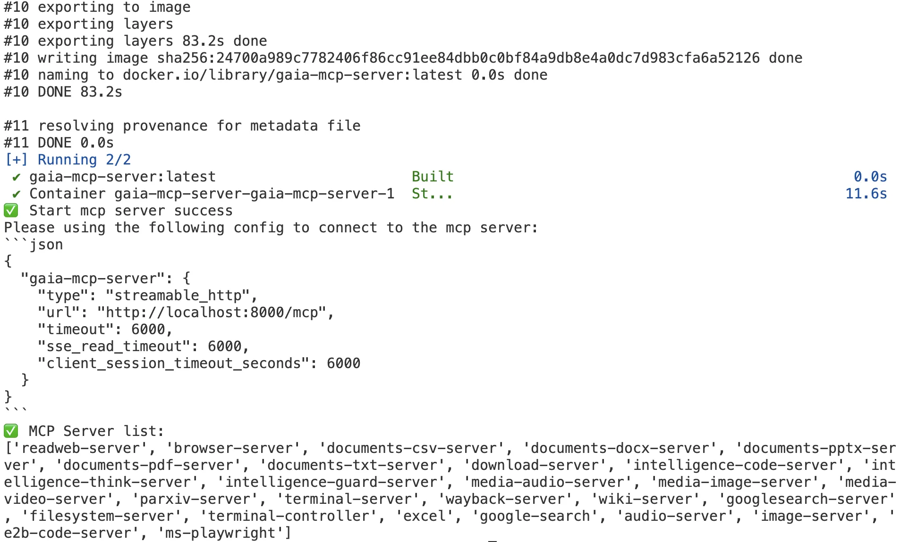

AWorld Train
AWorld Training bridges AWorld Agents with external training frameworks (e.g., Reinforcement Learning libraries). It is framework-agnostic, enabling you to bring AWorld Agents or Swarms into your preferred training environment.  The pipeline involves four key steps:
- Environment Setup (
env): Set up the environment, defining the state/action spaces and interaction dynamics. - Agent Construction (
agent): Build the agent's core logic, policy, and decision-making capabilities. - Framework Adaptation (
adapter): Utilize an adapter to standardize the agent's interface, ensuring compatibility with any RL training frameworks (e.g., Verl). - Training Execution (
verl): Configure the reward function and hyperparameters, then submit the training job via a run script.
Installation (Example with Verl)
Follow these steps to set up your training environment.
- Install System-level Prerequisites:
- Install a compatible NVIDIA Driver.
- Install the CUDA Toolkit.
- Manually Install PyTorch:
- Install a PyTorch version that matches your CUDA version. You can find the command on the PyTorch website.
- Install Verl and Dependencies:
- When you install Verl (e.g., via
pip install -e .), other Python packages liketransformers,deepspeed, andvllmwill be installed automatically. - Important: This step requires the prerequisites from steps 1 and 2 to succeed, as some packages need to be compiled against CUDA. See
setup.pyfor a full dependency list.
- When you install Verl (e.g., via
Setting Up the Remote Environment
Follow these steps to prepare your remote server and launch the environment.
System Requirements
Operating System
- The setup is compatible with Windows, macOS, and Linux.
- For best performance, a Linux system is highly recommended.
- Note: Using a server located in regions such as Singapore or North America is also advised to minimize latency.
Hardware
- Minimum: 4 CPU Cores and 8GB of RAM.
Software
- Docker: Docker must be installed on your machine.
- Important for Mac Users: If you are using a Mac with Apple Silicon (M-series), you must enable Rosetta for x86/64 emulation. Please follow the official instructions at: Docker for Mac Installation.
Login and Install the Environment
Log into your server and follow these steps.
a. Clone the AWorld code to a server directory.
git clone https://github.com/inclusionAI/AWorld ~/AWorld
b. Configure environment parameters and download the Gaia dataset.
-
Configure parameters: Edit the
~/AWorld/env/gaia-mcp-server/mcp_servers/.envfile and enter your specific configuration values.bash cd ~/AWorld/env/gaia-mcp-server/mcp_servers cp .env_template .env -
Download dataset: Download the gaia_dataset from Hugging Face and place it in
~/AWorld/env/gaia-mcp-server/docker/gaia_dataset.
c. Launch the Gaia Environment.
Run the command below to start the Gaia Environment instance in Docker. The instance will provide:
- An MCP service on port
8000(endpoint:http://localhost:8000/mcp). - A VNC service on port
5901. You can view the live interface athttp://localhost:5901/vnc.html?autoconnect=true.
cd ~/AWorld/env
# Build the Docker image and start the container instance. This process will take approximately 5 minutes.
# Upon success, the following log message will be displayed: Start mcp server success.
sh run-local.sh

d. Connecting and Testing the Gaia Environment
The URL for the Gaia Environment's MCP service is automatically configured as an environment variable, so no manual endpoint setup is required.
export MCP_SERVER_URL=http://localhost:8080/mcp
When building an Agent, you use the get_agent_tool_env_and_servers function to configure parameters for making MCP requests and to provide the list of MCP Servers. If this function is called without any arguments, it will automatically use default values.
gaia_env_config, gaia_env_servers = get_agent_tool_env_and_servers()
print(f"gaia_env_config: {gaia_env_config}\ngaia_env_servers: {gaia_env_servers}")
# output
# gaia_env_config: {
# "mcpServers": {
# "aworld-mcp": {
# "type": "streamable-http",
# "url": "http://localhost:8080/mcp",
# "headers": {
# "MCP_SERVERS": "readweb-server,browseruse-server,documents-csv-server,documents-docx-server,documents-pptx-server,documents-pdf-server,documents-txt-server,download-server,intelligence-code-server,intelligence-think-server,intelligence-guard-server,media-audio-server,media-image-server,media-video-server,parxiv-server,terminal-server,wayback-server,wiki-server,googlesearch-server",
# },
# "timeout": 600,
# "sse_read_timeout": 600,
# "client_session_timeout_seconds": 600,
# }
# }
# }
# gaia_env_servers: ['readweb-server', 'browser-server', ...]
Building a Custom Agent
The AWorld framework is designed for flexibility, allowing you to integrate custom agents with external Reinforcement Learning (RL) frameworks (e.g., Verl). This is primarily handled by the adapter module.
The adapter module works by providing the AWorld framework with the LLM's service URL (llm_base_url) and model name (llm_model_name), treating the LLM as a remote service.
llm_base_url=self.get_llm_server_address(),
llm_model_name=self.get_llm_server_model_name(),
Implementing a Custom AgentLoop
To train a custom agent, the primary task is to implement a CustomAgentLoop by inheriting from the AWorldAgentLoop base class.
The following example file, custom_agent_loop.py, demonstrates how to create a custom loop for a single agent using the Verl framework and an environment with five available tools.
from aworld.agents.llm_agent import Agent
from aworld.config import AgentConfig
from train.adapter.verl.aworld_agent_loop import AworldAgentLoop
from train.adapter.verl.common import get_agent_tool_env_and_servers
class GaiaAgentLoop(AworldAgentLoop):
def build_agents(self):
# Get the environment configuration and server details.
# Note: The MCP server must be running (Step 1) and the
# MCP_SERVER_URL/MCP_SERVER_TOKEN environment variables must be set.
gaia_env_config, gaia_env_servers = get_agent_tool_env_and_servers()
return Agent(
conf=AgentConfig(
# Get the dynamic llm server address from the server manager.
# The llm server is launched within VeRL.
llm_base_url=self.get_llm_server_address(),
llm_model_name=self.get_llm_server_model_name(),
llm_api_key="dummy",
),
name="gaia_super_agent",
system_prompt="<your_system_prompt>",
# MCP tool configuration for the agent, including ms-playwright,google-search,e2b-code-server,image-server and audio-server
mcp_config=gaia_env_config,
mcp_servers=gaia_env_servers,
)
Configuration and Launch
Once you have implemented your custom AgentLoop, you need to:
- Modify the
agent.yamlconfiguration file to use your new custom loop. - Update the
run.shlaunch script to point to your modifiedagent.yamlfile.
- name: gaia_agent
_target_: train.examples.train_gaia_with_aworld_verl.custom_agent_loop.GaiaAgentLoop
# Agent config
agent_loop_config_path=${path_to_train}/examples/train_gaia_with_aworld_verl/agent.yaml
Advanced Scenarios
AWorld also supports more complex single-agent or multi-agent systems.
- Agent Construction: For details on building single-agent or multi-agent systems, please refer to the Building and Running an Agent and Building and Running a Multi-Agent System guides.
- MCP Tools: If your agent requires MCP tools, you must configure the corresponding
mcp_configfile. Instructions can be found in the Building and Running an Agent guide.
Prepare for Training
After the environment (env) and agent have been set up, the run.sh script is used to initiate the Verl training process. Prior to execution, two final configuration steps are required:
- Configure the Reward: Define the reward function according to the specific objectives of the task.
- Modify the Launch Script: Update the
run.shscript to set the correct training parameters, such as configuration paths and hyperparameters.
Configuring the Reward Function
As an example, here is the reward function used for training the Gaia agent. The full code is located in gaia_reward_function.py.
Click to view the gaia_reward_function.py implementation
import re
import string
from aworld.logs.util import logger
def normalize_number_str(number_str: str) -> float:
# we replace these common units and commas to allow
# conversion to float
for char in ["$", "%", ","]:
number_str = number_str.replace(char, "")
try:
return float(number_str)
except ValueError:
# print(f"String {number_str} cannot be normalized to number str.")
return float("inf")
def split_string(
s: str,
char_list: list[str] = [",", ";"],
) -> list[str]:
pattern = f"[{''.join(char_list)}]"
return re.split(pattern, s)
def normalize_str(input_str, remove_punct=True) -> str:
"""
Normalize a string by:
- Removing all white spaces
- Optionally removing punctuation (if remove_punct is True)
- Converting to lowercase
Parameters:
- input_str: str, the string to normalize
- remove_punct: bool, whether to remove punctuation (default: True)
Returns:
- str, the normalized string
"""
# Remove all white spaces. Required e.g for seagull vs. sea gull
no_spaces = re.sub(r"\s", "", input_str)
# Remove punctuation, if specified.
if remove_punct:
translator = str.maketrans("", "", string.punctuation)
return no_spaces.lower().translate(translator)
else:
return no_spaces.lower()
def question_scorer(
model_answer: str,
ground_truth: str,
) -> bool:
def is_float(element: any) -> bool:
try:
float(element)
return True
except ValueError:
return False
if model_answer is None:
model_answer = "None"
# if gt is a number
if is_float(ground_truth):
# print(f"Evaluating {model_answer} as a number.")
normalized_answer = normalize_number_str(model_answer)
return normalized_answer == float(ground_truth)
# if gt is a list
elif any(char in ground_truth for char in [",", ";"]):
# print(f"Evaluating {model_answer} as a comma separated list.")
# question with the fish: normalization removes punct
gt_elems = split_string(ground_truth)
ma_elems = split_string(model_answer)
# check length is the same
if len(gt_elems) != len(ma_elems):
# warnings.warn(
# "Answer lists have different lengths, returning False.", UserWarning
# )
return False
# compare each element as float or str
comparisons = []
for ma_elem, gt_elem in zip(ma_elems, gt_elems):
if is_float(gt_elem):
normalized_ma_elem = normalize_number_str(ma_elem)
comparisons.append(normalized_ma_elem == float(gt_elem))
else:
# we do not remove punct since comparisons can include punct
comparisons.append(
normalize_str(ma_elem, remove_punct=False)
== normalize_str(gt_elem, remove_punct=False)
)
return all(comparisons)
# if gt is a str
else:
# print(f"Evaluating {model_answer} as a string.")
return normalize_str(model_answer) == normalize_str(ground_truth)
def gaia_reward_func(data_source, solution_str, ground_truth, extra_info=None):
pattern = r'<answer>(.*?)</answer>'
comp_match = re.search(pattern, solution_str, re.DOTALL | re.MULTILINE)
if not comp_match:
return 0.0
else:
comp_answer = comp_match.group(1).strip()
logger.info(f"comp_answer: {comp_answer}, ground_truth: {ground_truth}")
if question_scorer(comp_answer, ground_truth):
return 1.0
else:
return 0.0
After implementing your custom reward function, you must update the run.sh script to point to it:
reward_fn_name=gaia_reward_func
reward_fn_file_path=${path_to_train}/examples/train_gaia_with_aworld_verl/metrics/gaia_reward_function.py
Modifying the Launch Script
Below is an example of the run.sh script for training a GaiaAgent in the AWorld environment.
In this script, pay close attention to the following key configurations, which are crucial for connecting AWorld to the training framework:
agent_loop_config_path(Section 3): Specifies the configuration file for your custom AgentLoop.reward_fn_file_path(Section 4.1): Defines the file path where the reward function is located.reward_fn_name(Section 4.1): Specifies the name of the reward function to use.
For a detailed explanation of all parameters, please refer to the official VeRL documentation.
Click to view the full run.sh script
#!/usr/bin/env bash
set -xeuo pipefail
# ================= cluster topology =================
export GPUS_PER_NODE=${SLURM_GPUS_ON_NODE:-${GPUS_PER_NODE:-1}} # GPUs on this node
NNODES=${SLURM_JOB_NUM_NODES:-${NNODES:-1}}
export NNODES
export RAY_NUM_NODES=$NNODES
echo "Using $NNODES nodes and $GPUS_PER_NODE GPUs per node..."
# ================= data/model/tool =================
HDFS_ROOT=${HDFS_ROOT:-$PWD}
DATA_ROOT=${DATA_ROOT:-$PWD}
# Prefer local model if present, otherwise fall back to HF hub path
model_path=${model_path:-$DATA_ROOT/Qwen/Qwen3-4B}
if [ ! -d "$model_path" ]; then
model_path=Qwen/Qwen3-4B
fi
# Use the default output directory produced by create_dataset.py
train_files=$DATA_ROOT/datasets/train.parquet
test_files=$DATA_ROOT/datasets/test.parquet
# =================== custom ===================
path_to_train="/your/path/to/train"
reward_fn_name=gaia_reward_func
reward_fn_file_path=${path_to_train}/examples/train_gaia_with_aworld_verl/metrics/gaia_reward_function.py
# Agent config
agent_loop_config_path=${path_to_train}/examples/train_gaia_with_aworld_verl/agent.yaml
# set dummy_tool_config_path to enable auto_tool_choice
dummy_tool_config_path=${path_to_train}/examples/verl/configs/dummy_tool_config.yaml
# =================== wandb ===================
project_name=gaia
experiment_name=qwe3
default_local_dir=$DATA_ROOT/checkpoint/$experiment_name
# ================= algorithm =================
adv_estimator=grpo
use_kl_in_reward=false
kl_coef=0.0
use_kl_loss=false
kl_loss_coef=0.0
clip_ratio_low=0.2
clip_ratio_high=0.28
max_turns=8
max_prompt_length=1024
max_response_length=2048
actor_lr=1e-6
train_batch_size=1
ppo_mini_batch_size=1
n_resp_per_prompt=1
n_resp_per_prompt_val=1
# =================== logging ===================
export RAY_LOGGING_LEVEL=DEBUG
export HYDRA_FULL_ERROR=1
# ================= performance =================
export NCCL_IBEXT_DISABLE=1
export NCCL_NVLS_ENABLE=1
export NCCL_IB_HCA=mlx5
export UCX_NET_DEVICES=mlx5_0:1,mlx5_1:1,mlx5_2:1,mlx5_3:1,mlx5_4:1,mlx5_5:1,mlx5_6:1,mlx5_7:1
export VLLM_USE_V1=1
export VLLM_ATTENTION_BACKEND=FLASH_ATTN
infer_tp=1 # vLLM tensor parallel size
train_sp=1 # Ulysses sequence parallel size for actor
offload=true
actor_max_token_len_per_gpu=$(( (max_prompt_length + max_response_length) * 4 ))
log_prob_max_token_len_per_gpu=$(( actor_max_token_len_per_gpu * 2 ))
train_files="['$train_files']"
test_files="['$test_files']"
python3 -m verl.trainer.main_ppo \
algorithm.adv_estimator=$adv_estimator \
algorithm.use_kl_in_reward=$use_kl_in_reward \
algorithm.kl_ctrl.kl_coef=$kl_coef \
data.train_files="$train_files" \
data.val_files="$test_files" \
data.return_raw_chat=true \
data.train_batch_size=$train_batch_size \
data.max_prompt_length=$max_prompt_length \
data.max_response_length=$max_response_length \
data.filter_overlong_prompts=true \
data.truncation='error' \
actor_rollout_ref.model.path="$model_path" \
actor_rollout_ref.model.use_remove_padding=true \
actor_rollout_ref.model.enable_gradient_checkpointing=true \
actor_rollout_ref.actor.use_kl_loss=$use_kl_loss \
actor_rollout_ref.actor.kl_loss_coef=$kl_loss_coef \
actor_rollout_ref.actor.clip_ratio_low=$clip_ratio_low \
actor_rollout_ref.actor.clip_ratio_high=$clip_ratio_high \
actor_rollout_ref.actor.clip_ratio_c=10.0 \
actor_rollout_ref.actor.optim.lr=$actor_lr \
actor_rollout_ref.actor.use_dynamic_bsz=true \
actor_rollout_ref.actor.ppo_mini_batch_size=$ppo_mini_batch_size \
actor_rollout_ref.actor.ppo_max_token_len_per_gpu=$actor_max_token_len_per_gpu \
actor_rollout_ref.actor.ulysses_sequence_parallel_size=$train_sp \
actor_rollout_ref.actor.fsdp_config.param_offload=$offload \
actor_rollout_ref.actor.fsdp_config.optimizer_offload=$offload \
actor_rollout_ref.ref.log_prob_max_token_len_per_gpu=$log_prob_max_token_len_per_gpu \
actor_rollout_ref.rollout.name=vllm \
actor_rollout_ref.rollout.mode=async \
actor_rollout_ref.rollout.tensor_model_parallel_size=$infer_tp \
actor_rollout_ref.rollout.multi_turn.max_user_turns=$max_turns \
actor_rollout_ref.rollout.multi_turn.max_assistant_turns=$max_turns \
actor_rollout_ref.rollout.multi_turn.format=hermes \
actor_rollout_ref.rollout.agent.agent_loop_config_path=$agent_loop_config_path \
actor_rollout_ref.rollout.gpu_memory_utilization=0.75 \
actor_rollout_ref.rollout.n=$n_resp_per_prompt \
actor_rollout_ref.rollout.val_kwargs.top_p=0.6 \
actor_rollout_ref.rollout.val_kwargs.temperature=1.0 \
actor_rollout_ref.rollout.val_kwargs.n=$n_resp_per_prompt_val \
actor_rollout_ref.rollout.multi_turn.tool_config_path=$dummy_tool_config_path \
custom_reward_function.path="${reward_fn_file_path}"\
custom_reward_function.name="${reward_fn_name}"\
trainer.logger=console \
trainer.project_name=$project_name \
trainer.experiment_name=$experiment_name \
trainer.n_gpus_per_node="$GPUS_PER_NODE" \
trainer.val_before_train=true \
trainer.log_val_generations=50 \
trainer.nnodes="$NNODES" \
trainer.save_freq=-1 \
trainer.default_local_dir="$default_local_dir" \
trainer.test_freq=5 \
trainer.total_epochs=1 "$@"
Launching the Training
After all configurations are complete, you can start the training by running:
bash run.sh